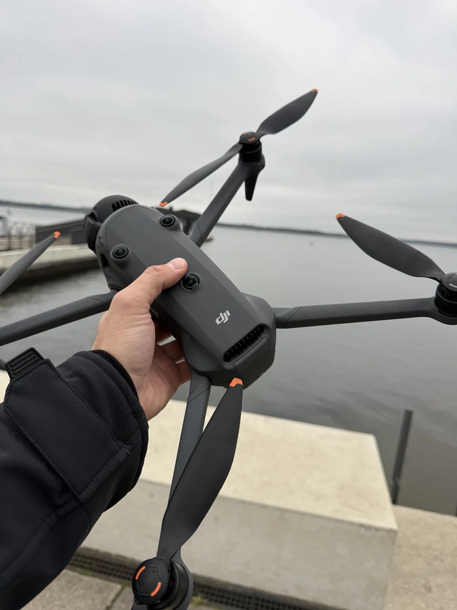

Abendlicht & gezielte Details
DJI Mavic 4 Pro
Wenn aus einem Sonnenuntergang langsam ein Abend über der Stadt wird, bleibe ich gern noch ein bisschen. Die Mavic 4 Pro begleitet mich dabei mit einem großen Hauptsensor und drei Kameras – vom weiten Landschaftsblick bis zum bewusst gewählten Detail.
Hasselblad-Hauptkamera: 4/3-Zoll-CMOS, 100 MP · 28, 70 und 168 mm Brennweite (Kleinbildäquivalent)